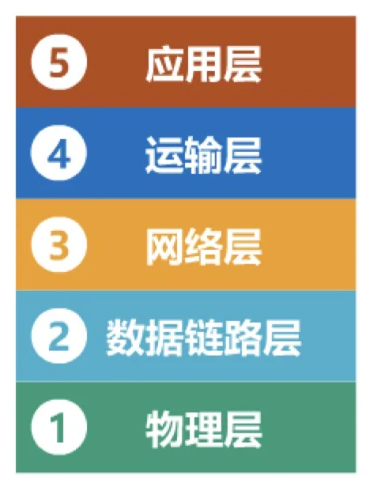

计算机通信与网络 · 第 6 章 应用层
6.1 应用层概述
应用层是计算机网络体系结构的最顶层，也是设计和建立计算机网络的最终目的——下面各层辛辛苦苦把数据从一台主机送到另一台主机，最终都是为了支撑某个具体的网络应用。本节先看清应用层在体系结构中的位置、它与运输层如何分工，再回顾应用层的发展脉络，最后交代因特网上几类最常见的应用，为本章后续各节画出轮廓。
1. 应用层在体系结构中的位置
计算机网络采用分层结构，每一层只解决一个特定问题。把各层的分工自上而下排开，一句话就能说清：
| 层次 | 解决的问题 |
|---|---|
| 应用层 | 解决通过应用进程的交互来实现特定网络应用的问题 |
| 运输层 | 解决进程之间基于网络的通信问题 |
| 网络层 | 解决分组在多个网络上传输（路由）的问题 |
| 数据链路层 | 解决分组在一个网络（或一段链路）上传输的问题 |
| 物理层 | 解决使用何种信号来传输比特的问题 |

自上而下读一遍，就能看出应用层的特殊之处：它是计算机网络体系结构的最顶层，是设计和建立计算机网络的最终目的，也是计算机网络中发展最快的部分。下面四层解决的是「怎样把数据从一台主机送到另一台主机」，几十年间相对稳定；应用层解决的是「拿这条通信通道去做什么」，所以新的应用层出不穷，演化速度远快于其他各层。
2. 应用层协议与运输层的分工
要理解应用层做什么，先要记住一个事实：在计算机网络中进行通信的真正实体，并不是主机本身，而是位于通信两端主机中的应用进程。第 5 章 5.1 节已经点明，为运行在不同主机上的应用进程提供直接的通信服务是运输层的任务，运输层协议因此又称为端到端协议。应用层就架在这条端到端的通道之上。
（1）应用层与运输层各管一段
两者的分工可以这样理解：运输层负责「把对端应用进程发出的数据交给本端的应用进程」，它向高层屏蔽了网络核心的细节（如网络拓扑、所采用的路由选择协议等），使应用进程看见的好像是在两个运输层实体之间有一条端到端的逻辑通信信道；对端的数据究竟交给哪个进程，则靠端口号来区分（见 5.2 节）。应用层负责「用这条通道完成什么」，即通过应用进程之间的交互来实现某个特定的网络应用。因特网的运输层为应用层提供了两种协议：面向连接的 TCP（Transmission Control Protocol，传输控制协议）和无连接的 UDP（User Datagram Protocol，用户数据报协议），选哪一种取决于应用对可靠性和实时性的要求（见 5.3 节）。
（2）应用层协议规定什么
同一类网络应用要能互通，通信两端就必须遵守共同的规则，这就是应用层协议。它规定的是应用进程交换报文时应遵守的约定：报文的类型（例如请求与响应之分）、每种报文的格式与字段含义、什么时机发送、收到之后如何响应。后面要学的超文本传送协议 HTTP（HyperText Transfer Protocol）、域名系统 DNS（Domain Name System）等，都是应用层协议。不同的网络应用对运输层的要求不同，因此有的应用层协议建立在 TCP 之上，有的建立在 UDP 之上——这正是应用层与运输层分工的体现。
3. 应用层的发展
应用层是计算机网络中发展最快的部分。回顾它的发展，可以看到一条清晰的脉络：
- 早期基于文本的应用：电子邮件、远程登录、文件传输、新闻组；
- 20 世纪 90 年代：万维网 WWW（World Wide Web）把因特网带入千家万户；
- 当今：即时通信、P2P 文件共享以及各种音视频应用成为主流。
推动这条脉络不断向前的，还有支撑环境的持续变化：计算设备的小型化和「无处不在」，宽带住宅接入和无线接入的日益普及与迅速发展，为未来更多的新型应用提供了广阔的舞台。也正因为应用层变得这么快，本章讲的重点不是某个具体的应用程序，而是网络应用的原理、协议和实现——掌握了这些，再遇到新应用也不会陌生。
4. 因特网上常见的网络应用
因特网上运行着成千上万种应用，不过支撑我们日常使用的主要是下面几类，它们也正是本章学习的对象：
- 万维网 WWW（World Wide Web）：用浏览器访问网页，是 20 世纪 90 年代以来把因特网带入千家万户的应用。浏览器与服务器之间靠超文本传送协议 HTTP（HyperText Transfer Protocol）交换请求与响应；例如用浏览器打开一所大学的门户网站，就是一次再普通不过的 WWW 应用。
- 域名系统 DNS（Domain Name System）：人习惯记域名（如 www.hnust.cn），而网络中的主机要靠 IP 地址定位（如 218.75.230.30），DNS 的任务就是把域名解析成与之对应的 IP 地址，让用户不必去记这些数字。
- 动态主机配置协议 DHCP（Dynamic Host Configuration Protocol）：让接入网络的主机自动获得 IP 地址等配置信息，不必逐台手工设置。
- 电子邮件：最典型的异步通信应用，也是早期基于文本的应用的代表。
- 文件传送协议 FTP（File Transfer Protocol）：在主机之间传送文件；除此之外，还有 P2P（Peer-to-Peer，对等方式）文件共享。
- 多媒体网络应用：音视频等对时延和带宽有特殊要求的应用，是当今网络应用的主流形态之一。
5. 第 6 章的展开顺序
本章以这些经典应用为例，按「先讲工作方式、再讲具体应用」的顺序展开：
- 6.2 客户—服务器方式和对等方式：这是网络应用最基本的两种组织方式，后面每一类应用都要先明确自己属于哪一种，所以放在最前面；P2P 文件共享正是对等方式的典型代表。
- 6.3 动态主机配置协议 DHCP：主机要能上网，首先得拿到 IP 地址等配置，DHCP 解决的正是这个问题。
- 6.4 域名系统 DNS：有了地址，还要能按名字找到对方，DNS 负责域名与 IP 地址之间的转换。
- 6.5 文件传送协议 FTP：最经典的应用之一，讲清它如何在运输层之上组织文件传送。
- 6.6 电子邮件：结构比文件传送复杂，涉及发送、接收与邮件服务器的协同工作。
- 6.7 万维网 WWW：当今使用最广泛的应用，涉及的知识点也最丰富，放在最后详细展开。
上述应用类型与本章各节一一对应：P2P 文件共享作为对等方式的典型在 6.2 节讨论，DHCP、DNS、FTP、电子邮件、万维网 WWW 依次安排在 6.3 至 6.7 节；多媒体网络应用（音视频等）对时延和带宽的要求更高，是当今网络应用的重要形态。可以看出，这些应用全都建立在第 5 章运输层提供的端到端服务之上：应用层协议决定「交换什么报文、怎样交换」，运输层决定「这些报文如何可靠或高效地送达对端的应用进程」。抓住这条分工线索，本章各节的内容就串成了一条线。
本节小结
- 应用层是体系结构的最顶层，是设计和建立计算机网络的最终目的，也是发展最快的部分；它解决的是通过应用进程的交互来实现特定网络应用的问题。
- 各层分工自上而下依次是：应用层解决应用问题，运输层解决进程之间基于网络的通信，网络层解决分组在多个网络上传输（路由），数据链路层解决分组在一个网络（或一段链路）上的传输，物理层解决用何种信号传输比特。
- 应用进程之间的通信由运输层提供端到端服务（第 5 章），应用层协议则规定应用进程交换报文的类型、格式与规则，二者分工明确。
- 应用层的发展脉络：早期基于文本的应用（电子邮件、远程登录、文件传输、新闻组）→ 20 世纪 90 年代的万维网 WWW → 当今的即时通信、P2P 文件共享与各种音视频应用；设备的小型化、宽带与无线接入的普及为新型应用提供了舞台。
- 本章要学习的经典应用：万维网 WWW、域名系统 DNS、动态主机配置协议 DHCP、电子邮件、文件传送协议 FTP、P2P 文件共享、多媒体网络应用。
- 后续各节依次展开：6.2 客户—服务器方式和对等方式 → 6.3 DHCP → 6.4 DNS → 6.5 FTP → 6.6 电子邮件 → 6.7 万维网 WWW。